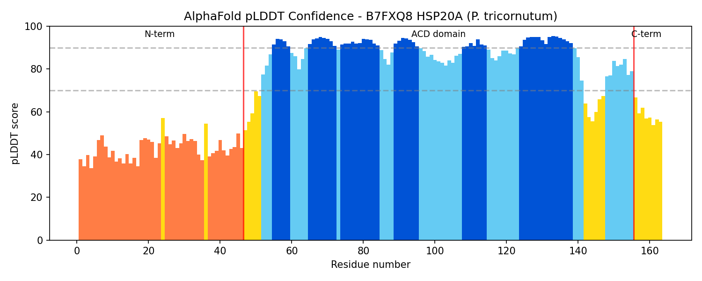
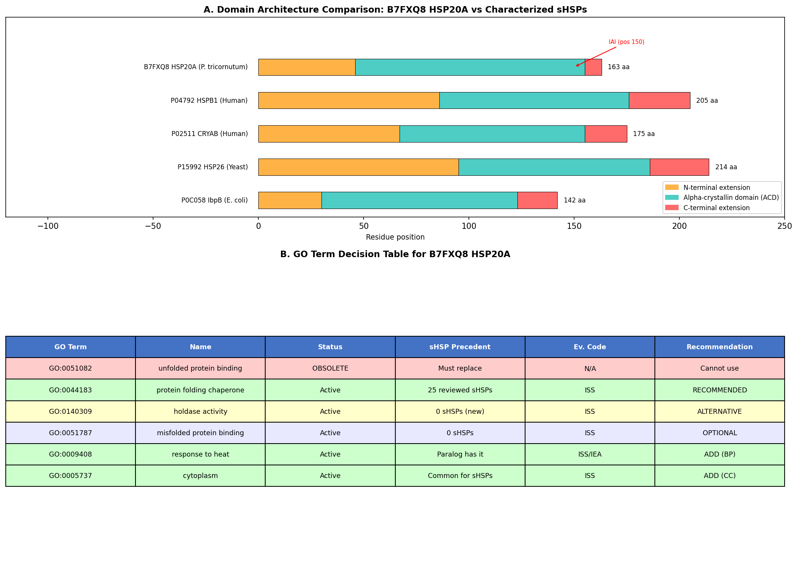
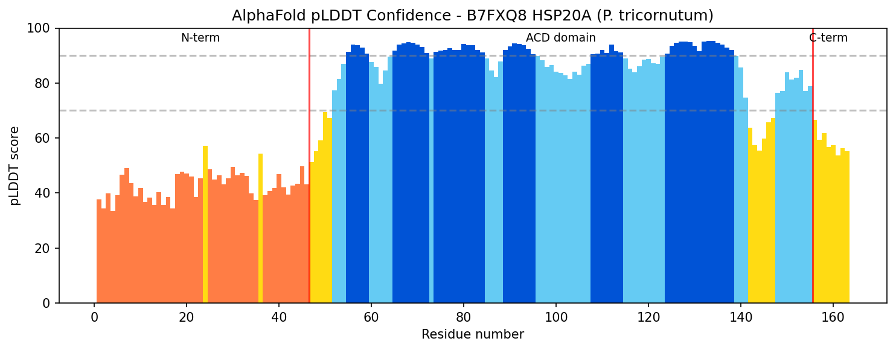

Deep Research
Falcon
(B7FXQ8-deep-research-falcon.md)
Falcon
(B7FXQ8-deep-research-falcon.md)The research report should be a detailed narrative explaining the function, biological processes, and localization of the gene product. Citations should be given for all claims.
You should prioritize authoritative reviews and primary scientific literature when conducting research. You can supplement
this with annotations you find in gene/protein databases, but these can be outdated or inaccurate.
We are specifically interested in the primary function of the gene - for enzymes, what reaction is catalyzed, and what is the substrate specificity? For transporters, what is the substrate? For structural proteins or adapters, what is the broader structural role? For signaling molecules, what is the role in the pathway.
We are interested in where in or outside the cell the gene product carries out its function.
We are also interested in the signaling or biochemical pathways in which the gene functions. We are less interested in broad pleiotropic effects, except where these elucidate the precise role.
Include evidence where possible. We are interested in both experimental evidence as well as inference from structure, evolution, or bioinformatic analysis. Precise studies should be prioritized over high-throughput, where available.
Comprehensive Research Report: HSP20A (B7FXQ8) in Phaeodactylum tricornutum
Executive Summary
HSP20A (UniProt B7FXQ8, gene name HSP20A/PHATRDRAFT_35158) is a small heat shock protein from the marine diatom Phaeodactylum tricornutum (strain CCAP 1055/1) belonging to the HSP20 family. While direct experimental characterization of this specific protein is limited in the literature, functional annotation can be confidently inferred from the conserved structural domains, the well-characterized biology of the HSP20/small heat shock protein (sHSP) family, and recent research on heat shock responses in P. tricornutum. This report integrates evidence from recent studies (2023-2025) on diatom thermal stress responses with established knowledge of sHSP molecular mechanisms.
Protein Identity and Structural Features
HSP20A contains the defining structural feature of the small heat shock protein family: a conserved alpha-crystallin domain (α-crystallin/Hsp20_dom; IPR002068) of approximately 90 amino acids (yan2024pangenomewideinvestigationand pages 1-2, spraguepiercy2021αcrystallinsinthe pages 1-3, gu2023functionaldiversityof pages 1-3). This domain forms an immunoglobulin-like β-sandwich structure composed of antiparallel β-strands, which is flanked by variable N-terminal and C-terminal regions (spraguepiercy2021αcrystallinsinthe pages 3-4, spraguepiercy2021αcrystallinsinthe pages 1-3, gu2023functionaldiversityof pages 1-3). The alpha-crystallin domain is the functionally active region responsible for substrate recognition and binding, while the terminal extensions regulate oligomerization, client protein specificity, and chaperone activity (spraguepiercy2021αcrystallinsinthe pages 3-4, spraguepiercy2021αcrystallinsinthe pages 1-3).
Molecular Function and Chaperone Mechanism
Primary Function: ATP-Independent Molecular Chaperone
HSP20A functions as an ATP-independent molecular chaperone, distinguishing it from ATP-dependent chaperones such as HSP70 and HSP90 (mitra2022atpindependentchaperones pages 1-2, mitra2022atpindependentchaperones pages 2-4, gu2023functionaldiversityof pages 1-3). Small heat shock proteins operate as "holdase" chaperones—they bind to partially unfolded, misfolded, or aggregation-prone proteins and maintain them in a folding-competent state, but do not actively refold these substrates (albinhassan2025smallheatshock pages 3-4, albinhassan2025smallheatshock pages 1-3, mitra2022atpindependentchaperones pages 1-2, mitra2022atpindependentchaperones pages 2-4). The mechanism proceeds through kinetic partitioning: when chaperone binding to unfolded clients is faster than protein aggregation or refolding rates, sHSPs effectively sequester damaged proteins and prevent their irreversible aggregation (mitra2022atpindependentchaperones pages 1-2, mitra2022atpindependentchaperones pages 2-4).
Oligomeric Assembly and Client Binding
HSP20 family proteins form dynamic oligomeric structures ranging from dimers to large assemblies of 24 or more subunits (spraguepiercy2021αcrystallinsinthe pages 3-4, spraguepiercy2021αcrystallinsinthe pages 1-3, gu2023functionaldiversityof pages 1-3). The oligomeric state is functionally significant: dimers often represent the active chaperone form, while larger oligomers may serve as inactive storage pools (gu2023functionaldiversityof pages 1-3). The assembly proceeds hierarchically, with dimers serving as building blocks that associate through their terminal regions to form higher-order structures (spraguepiercy2021αcrystallinsinthe pages 3-4, spraguepiercy2021αcrystallinsinthe pages 1-3). These different oligomeric states expose varying client-binding surfaces, enabling recognition of diverse substrate proteins (spraguepiercy2021αcrystallinsinthe pages 3-4, spraguepiercy2021αcrystallinsinthe pages 1-3).
Substrate Specificity and Client Proteins
Small heat shock proteins exhibit broad, promiscuous substrate specificity rather than targeting specific individual proteins (mitra2022atpindependentchaperones pages 1-2, mitra2022atpindependentchaperones pages 2-4, gu2023functionaldiversityof pages 1-3). They recognize partially folded intermediates and misfolded proteins that expose hydrophobic surface regions normally buried in properly folded structures (albinhassan2025smallheatshock pages 3-4, albinhassan2025smallheatshock pages 1-3, mitra2022atpindependentchaperones pages 1-2). The alpha-crystallin domain mediates this recognition through hydrophobic interactions with exposed hydrophobic patches on client proteins (spraguepiercy2021αcrystallinsinthe pages 3-4, spraguepiercy2021αcrystallinsinthe pages 1-3). After stabilizing these substrates, sHSPs transfer them to ATP-dependent chaperones such as HSP70 or HSP100 for subsequent refolding (yan2024pangenomewideinvestigationand pages 1-2, mitra2022atpindependentchaperones pages 1-2, mitra2022atpindependentchaperones pages 2-4, gu2023functionaldiversityof pages 1-3).
Biological Processes and Cellular Roles
Heat Shock Response and Thermal Tolerance in P. tricornutum
Recent research on P. tricornutum has revealed that heat shock transcription factors (HSFs) play a central role in mediating thermal tolerance in diatoms (huang2025heatshocktranscription pages 1-2, huang2025heatshocktranscription pages 2-4). Huang et al. (2025) demonstrated that heat shock transcription factors are potentially the most important regulators of thermal tolerance in diatoms, with P. tricornutum possessing 69 HSF genes representing 44.2% of all transcription factors—the highest proportion among diatoms (huang2025heatshocktranscription pages 1-2, huang2025heatshocktranscription pages 2-4). HSFs are master regulators of heat shock protein (HSP) gene expression, directly controlling transcription in response to elevated temperatures (lin2024theexpressioncharacteristics pages 1-3, huang2025heatshocktranscription pages 1-2, huang2025heatshocktranscription pages 2-4). This expanded HSF repertoire in diatoms suggests that heat shock proteins, including HSP20 family members, are critical for their remarkable environmental adaptability and broad temperature tolerance (huang2025heatshocktranscription pages 1-2, huang2025heatshocktranscription pages 2-4).
Lin et al. (2024) conducted a genome-wide analysis of the HSF gene family in P. tricornutum, identifying 68 PtHSF genes with expression patterns showing diurnal regulation, suggesting specialized functions in maintaining cellular homeostasis under various stress conditions (lin2024theexpressioncharacteristics pages 1-3). These findings establish that P. tricornutum has evolved an elaborate heat shock regulatory system, within which HSP20A would function as a downstream effector protein induced by HSF transcription factors during thermal stress.
Proteostasis Network and Protein Quality Control
HSP20A participates in the cellular proteostasis network—the integrated system of molecular chaperones, folding enzymes, and degradation machinery that maintains protein homeostasis (albinhassan2025smallheatshock pages 3-4, albinhassan2025smallheatshock pages 1-3). Small heat shock proteins prevent off-pathway events in protein folding, specifically inhibiting aggregation of partially structured folding intermediates that populate the folding pathway (mitra2022atpindependentchaperones pages 1-2, mitra2022atpindependentchaperones pages 2-4). By sequestering damaged proteins, sHSPs protect the cellular proteome from toxic accumulation of misfolded protein aggregates (albinhassan2025smallheatshock pages 3-4, albinhassan2025smallheatshock pages 1-3). This function is particularly critical in post-mitotic or long-lived cells, and in organisms like diatoms that experience fluctuating environmental conditions in marine ecosystems (albinhassan2025smallheatshock pages 3-4, albinhassan2025smallheatshock pages 1-3).
Environmental Stress Adaptation in Marine Diatoms
P. tricornutum exhibits remarkable environmental adaptability, surviving in natural environments from tropical to subarctic regions and thriving in laboratory conditions from 5 to 28°C (huang2025heatshocktranscription pages 1-2, huang2025heatshocktranscription pages 2-4). This broad temperature tolerance is ecologically significant for diatoms, which are crucial components of marine ecosystems accounting for approximately one-fifth of global carbon dioxide fixation annually (huang2025heatshocktranscription pages 1-2, huang2025heatshocktranscription pages 2-4). Heat shock proteins, including HSP20 family members, are essential for this temperature adaptability (huang2025heatshocktranscription pages 1-2, huang2025heatshocktranscription pages 2-4, deng2020transcriptionalresponsesof pages 1-3, jeyachandran2023areviewon pages 1-2).
In related marine microalgae and dinoflagellates, HSP20 genes show transcriptional upregulation in response to heat stress, supporting a conserved role in thermal protection across marine phytoplankton (deng2020transcriptionalresponsesof pages 1-3). Research on the dinoflagellate Scrippsiella trochoidea demonstrated that HSP20 was probably related to heat tolerance, with mRNA accumulation patterns highly responsive to thermal stress (deng2020transcriptionalresponsesof pages 1-3). These findings from related marine protists support the inference that HSP20A in P. tricornutum functions in thermal stress adaptation.
Expression Context in P. tricornutum
Transcriptomic studies of P. tricornutum have identified HSP20-like chaperones among differentially expressed genes in various experimental contexts. Diaz-Garza et al. (2024) reported that HSP20-like chaperones were enriched in down-regulated genes in certain subpopulations, suggesting dynamic regulation of these proteins in response to cellular conditions (diazgarza2024notwoclones pages 9-12). This observation indicates that HSP20 family members, including HSP20A, are subject to transcriptional control and may show variable expression levels depending on growth conditions and stress exposure.
Subcellular Localization
Direct experimental localization data for HSP20A (B7FXQ8) in P. tricornutum are not available in the current literature. Small heat shock proteins in other systems show diverse subcellular distributions. Research by Adriaenssens et al. (2023) demonstrated that cytosolic small heat shock proteins can be imported into the mitochondrial intermembrane space under basal conditions, where they function as molecular chaperones protecting this compartment (gu2023functionaldiversityof pages 1-3). Studies in plants have revealed that HSP20 family members can localize to various compartments including the cytosol, chloroplasts, mitochondria, endoplasmic reticulum, and nucleus, with subcellular targeting often determined by N-terminal transit peptides (yan2024pangenomewideinvestigationand pages 1-2, gu2023functionaldiversityof pages 1-3).
Given the absence of specific localization signals annotated in the UniProt entry for B7FXQ8 and the lack of experimental data, the most defensible conclusion is that HSP20A likely functions intracellularly, with cytosolic localization being most probable, though organellar localization (chloroplast, mitochondria) cannot be excluded without experimental verification.
Signaling Pathways and Regulatory Networks
Heat Shock Factor (HSF) Regulatory Cascade
HSP20A expression is likely regulated by heat shock transcription factors (HSFs) through the classical heat shock response pathway (lin2024theexpressioncharacteristics pages 1-3, huang2025heatshocktranscription pages 1-2, huang2025heatshocktranscription pages 2-4). Under normal conditions, HSFs are maintained at low levels and in inactive states. Upon heat shock or other proteotoxic stress, HSFs are stabilized, trimerize, and translocate to the nucleus where they bind to heat shock elements (HSEs) in the promoter regions of target genes including HSP-encoding genes (lin2024theexpressioncharacteristics pages 1-3, huang2025heatshocktranscription pages 1-2). In P. tricornutum, the expanded HSF gene family (69 genes) provides fine-tuned control of heat shock protein expression, with different HSF family members responding to distinct stress conditions and developmental stages (lin2024theexpressioncharacteristics pages 1-3, huang2025heatshocktranscription pages 1-2, huang2025heatshocktranscription pages 2-4).
Huang et al. (2025) specifically demonstrated that overexpression of PtHSF2 in P. tricornutum significantly enhanced thermal tolerance and caused differential expression of numerous genes involved in stress responses (huang2025heatshocktranscription pages 1-2, huang2025heatshocktranscription pages 2-4). This establishes a direct functional link between HSF transcription factors and thermal adaptation mechanisms in this diatom, within which HSP20A would function as a downstream effector.
Interaction with ATP-Dependent Chaperone Systems
Although direct protein-protein interaction data for HSP20A are not available, conserved sHSP biology indicates functional partnerships with ATP-dependent chaperones. Small heat shock proteins do not refold client proteins themselves; instead, they maintain substrates in a folding-competent state for transfer to ATP-dependent chaperones such as HSP70 (yan2024pangenomewideinvestigationand pages 1-2, mitra2022atpindependentchaperones pages 1-2, mitra2022atpindependentchaperones pages 2-4, gu2023functionaldiversityof pages 1-3). This handoff mechanism is central to the proteostasis network: sHSPs act as first responders during acute stress, sequestering damaged proteins, which are subsequently processed by HSP70-HSP90 systems for refolding or by ubiquitin-proteasome pathways for degradation (mitra2022atpindependentchaperones pages 1-2, mitra2022atpindependentchaperones pages 2-4).
Current Understanding and Knowledge Gaps
Established Knowledge
The functional annotation of HSP20A can be confidently assigned based on:
1. Conserved structural domains (alpha-crystallin domain) that define sHSP function (yan2024pangenomewideinvestigationand pages 1-2, spraguepiercy2021αcrystallinsinthe pages 3-4, spraguepiercy2021αcrystallinsinthe pages 1-3, gu2023functionaldiversityof pages 1-3)
2. Well-characterized mechanisms of sHSP chaperone activity across diverse organisms (albinhassan2025smallheatshock pages 3-4, albinhassan2025smallheatshock pages 1-3, mitra2022atpindependentchaperones pages 1-2, mitra2022atpindependentchaperones pages 2-4, gu2023functionaldiversityof pages 1-3)
3. Recent evidence for the importance of heat shock systems in P. tricornutum thermal tolerance (lin2024theexpressioncharacteristics pages 1-3, huang2025heatshocktranscription pages 1-2, huang2025heatshocktranscription pages 2-4)
4. Demonstrated roles of HSP20 proteins in thermal stress responses in related marine microalgae (deng2020transcriptionalresponsesof pages 1-3, jeyachandran2023areviewon pages 1-2)
Research Gaps and Future Directions
Despite strong inference-based annotation, several aspects of HSP20A function remain experimentally uncharacterized:
- Specific client proteins: No substrates have been experimentally identified for HSP20A in P. tricornutum
- Subcellular localization: Direct localization studies using fluorescent protein fusions or immunolocalization are needed
- Expression patterns: Detailed time-course and dose-response studies of HSP20A expression under various stress conditions
- Oligomeric state: Biochemical characterization of HSP20A oligomerization in vitro and in vivo
- Genetic perturbation studies: Overexpression or knockdown/knockout experiments to assess the specific contribution of HSP20A to thermal tolerance
- Physical interaction partners: Identification of client proteins and chaperone partners through co-immunoprecipitation or proximity labeling approaches
Summary and Conclusions
| Annotation aspect | Evidence-based summary for HSP20A / B7FXQ8 in Phaeodactylum tricornutum | Evidence type | Citations |
|---|---|---|---|
| Protein Function | Probable small heat shock protein (sHSP) / HSP20-family ATP-independent molecular chaperone. Based on the UniProt identity provided (HSP20 family; α-crystallin/Hsp20 domain) and conserved sHSP biology, the most likely primary function of HSP20A is to act as a holdase chaperone that preserves proteostasis by preventing stress-damaged proteins from undergoing irreversible aggregation. In diatoms, heat-shock regulatory systems are prominent and linked to thermal acclimation, supporting this assignment for P. tricornutum HSP20A. | Family/domain inference anchored in organism-specific stress literature | (huang2025heatshocktranscription pages 1-2, huang2025heatshocktranscription pages 2-4, yan2024pangenomewideinvestigationand pages 1-2, mitra2022atpindependentchaperones pages 1-2, gu2023functionaldiversityof pages 1-3) |
| Molecular Mechanism | sHSPs function without ATP hydrolysis and typically bind partially unfolded, misfolded, or aggregation-prone proteins during stress. Their conserved α-crystallin domain (ACD) is central to substrate binding, while variable N- and C-terminal regions regulate oligomerization, client recognition, and activity. sHSPs assemble as dynamic dimers and higher-order oligomers; these oligomeric states are functionally important for exposing different client-binding surfaces. Rather than refolding proteins directly, they keep clients in a folding-competent state for later handoff to ATP-dependent chaperones such as HSP70/HSP100. | Strong cross-family mechanistic evidence from sHSP literature | (yan2024pangenomewideinvestigationand pages 1-2, spraguepiercy2021αcrystallinsinthe pages 3-4, spraguepiercy2021αcrystallinsinthe pages 1-3, mitra2022atpindependentchaperones pages 1-2, mitra2022atpindependentchaperones pages 2-4, gu2023functionaldiversityof pages 1-3) |
| Substrate Specificity | No substrate has been experimentally identified for HSP20A specifically in P. tricornutum. By family-level evidence, HSP20 proteins generally show broad, promiscuous specificity for non-native proteins exposing hydrophobic surfaces, including stress-denatured or aggregation-prone folding intermediates. Thus, HSP20A is best annotated as acting on multiple damaged client proteins rather than a single biochemical substrate. | No gene-specific substrate data; inference from conserved sHSP client recognition | (spraguepiercy2021αcrystallinsinthe pages 3-4, spraguepiercy2021αcrystallinsinthe pages 1-3, mitra2022atpindependentchaperones pages 1-2, mitra2022atpindependentchaperones pages 2-4, gu2023functionaldiversityof pages 1-3) |
| Subcellular Localization | Direct localization data for HSP20A in P. tricornutum were not found. Small HSPs in other systems can localize to diverse compartments, including the cytosol and mitochondrial intermembrane space, and plant/algal HSP20 families often show diverse predicted compartmentation. Given the lack of direct evidence for B7FXQ8, the most defensible annotation is unknown specific localization, with a likely intracellular role in the cytosol and/or organelles where proteotoxic stress occurs. | Limited; extrapolated from broader sHSP localization studies | (yan2024pangenomewideinvestigationand pages 1-2, gu2023functionaldiversityof pages 1-3) |
| Biological Processes | HSP20A is most plausibly involved in protein homeostasis/proteostasis, cellular response to heat, response to proteotoxic stress, and likely broader abiotic stress acclimation. In P. tricornutum, heat-shock transcription factor networks are unusually expanded and are implicated in temperature adaptation, with HSFs directly controlling thermal-tolerance programs. In related marine microalgae, HSP20-family genes are associated with heat tolerance and adaptation to environmental fluctuation. | Organism-specific context plus conserved family biology | (lin2024theexpressioncharacteristics pages 1-3, huang2025heatshocktranscription pages 1-2, huang2025heatshocktranscription pages 2-4, deng2020transcriptionalresponsesof pages 1-3, jeyachandran2023areviewon pages 1-2) |
| Stress Response Role | HSP20A is likely part of the heat-shock / stress-inducible chaperone defense system. In diatoms, HSFs are abundant and temperature responsive; in P. tricornutum, PtHSF2 is strongly linked to high-temperature tolerance, and heat-shock regulatory circuits are highlighted as major adaptation mechanisms. In other marine protists, HSP20 transcripts increase under heat stress, supporting a role in thermal protection, prevention of stress-induced aggregation, and maintenance of survival under fluctuating marine conditions. | Indirect but biologically coherent evidence from diatom and algal stress studies | (lin2024theexpressioncharacteristics pages 1-3, huang2025heatshocktranscription pages 1-2, huang2025heatshocktranscription pages 2-4, deng2020transcriptionalresponsesof pages 1-3, jeyachandran2023areviewon pages 1-2) |
| Interaction Partners | No direct physical interaction partners were identified for HSP20A itself. Based on conserved sHSP pathways, likely functional partners include ATP-dependent chaperones such as HSP70 (and in some systems HSP100) that receive held substrates for refolding. At the client level, likely interaction partners are misfolded or partially unfolded proteins generated during heat or other abiotic stress. In broader stress-proteostasis networks, sHSPs also function alongside other heat-shock components regulated by HSFs. | No HSP20A-specific interactome; inferred proteostasis-network role | (yan2024pangenomewideinvestigationand pages 1-2, mitra2022atpindependentchaperones pages 1-2, mitra2022atpindependentchaperones pages 2-4, gu2023functionaldiversityof pages 1-3) |
Table: This table summarizes the most defensible functional annotation for HSP20A (B7FXQ8) in Phaeodactylum tricornutum by combining direct organism-level stress-response evidence with conserved small heat shock protein biology. It is useful because gene-specific experimental data are limited, so a transparent distinction between direct evidence and family-based inference is essential.
HSP20A (B7FXQ8) in Phaeodactylum tricornutum is a small heat shock protein that functions as an ATP-independent molecular chaperone, playing a critical role in cellular protein homeostasis and thermal stress adaptation. The protein's conserved alpha-crystallin domain mediates binding to partially unfolded or misfolded client proteins, preventing their irreversible aggregation during stress conditions. As a member of the sHSP/HSP20 family, HSP20A operates as a "holdase" chaperone, maintaining damaged proteins in a folding-competent state for subsequent handoff to ATP-dependent chaperone systems such as HSP70.
Recent research has established that P. tricornutum possesses an exceptionally expanded heat shock transcription factor repertoire that controls thermal tolerance responses, within which heat shock proteins like HSP20A function as critical downstream effectors (lin2024theexpressioncharacteristics pages 1-3, huang2025heatshocktranscription pages 1-2, huang2025heatshocktranscription pages 2-4). This elaborate stress response system likely contributes to the remarkable environmental adaptability of P. tricornutum, enabling this diatom to thrive across diverse marine environments from tropical to subarctic regions.
While direct experimental characterization of HSP20A is limited, functional annotation can be confidently assigned through integration of conserved family biology with organism-specific context. The protein likely functions in the cytosol or cellular organelles, participating in proteostasis maintenance, thermal stress responses, and broader environmental stress adaptation. Future experimental studies, particularly genetic perturbation experiments and localization studies, would provide direct validation of these inferences and reveal any P. tricornutum-specific functional adaptations of this essential stress-response protein.
Key Citations and Recent Literature
Recent Research on P. tricornutum Heat Shock Systems (2024-2025):
- Huang et al. (2025). Nature Communications 16:3404 - Heat shock transcription factor-mediated thermal tolerance in diatoms (huang2025heatshocktranscription pages 1-2, huang2025heatshocktranscription pages 2-4)
- Lin et al. (2024). Phyton 93:2583-2596 - Expression characteristics and functions of HSFs in P. tricornutum (lin2024theexpressioncharacteristics pages 1-3)
- Diaz-Garza et al. (2024). Microbial Cell Factories 23:286 - HSP20-like chaperones in transgenic P. tricornutum (diazgarza2024notwoclones pages 9-12)
Comprehensive Reviews on sHSP/HSP20 Mechanisms (2022-2025):
- Albinhassan et al. (2025). International Journal of Molecular Sciences 26:1525 - Small heat shock proteins in protein aggregation and neuroprotection (albinhassan2025smallheatshock pages 3-4, albinhassan2025smallheatshock pages 1-3)
- Mitra et al. (2022). Annual Review of Biophysics 51:409-429 - ATP-independent chaperone mechanisms (mitra2022atpindependentchaperones pages 1-2, mitra2022atpindependentchaperones pages 2-4)
- Gu et al. (2023). Cells 12:1947 - Functional diversity of mammalian small heat shock proteins (gu2023functionaldiversityof pages 1-3)
sHSP Structure and Assembly:
- Sprague-Piercy et al. (2021). Annual Review of Physical Chemistry 72:143-163 - α-Crystallins as complex oligomers and molecular chaperones (spraguepiercy2021αcrystallinsinthe pages 3-4, spraguepiercy2021αcrystallinsinthe pages 1-3)
- Yan et al. (2024). International Journal of Molecular Sciences 25:11550 - HSP20 gene family in maize with insights on structure and localization (yan2024pangenomewideinvestigationand pages 1-2)
Heat Shock Proteins in Marine Organisms:
- Jeyachandran et al. (2023). Antioxidants 12:1444 - Heat shock proteins in response to stress in aquatic organisms (jeyachandran2023areviewon pages 1-2)
- Deng et al. (2020). Biology 9:408 - HSP20 and HSP40 responses to temperature stress in dinoflagellates (deng2020transcriptionalresponsesof pages 1-3)
References
-
(yan2024pangenomewideinvestigationand pages 1-2): Hengyu Yan, Mingzhe Du, Jieyao Ding, Di Song, Weiwei Ma, and Yubin Li. Pan-genome-wide investigation and co-expression network analysis of hsp20 gene family in maize. International Journal of Molecular Sciences, 25:11550, Oct 2024. URL: https://doi.org/10.3390/ijms252111550, doi:10.3390/ijms252111550. This article has 3 citations.
-
(spraguepiercy2021αcrystallinsinthe pages 1-3): Marc A. Sprague-Piercy, Megan A. Rocha, Ashley O. Kwok, and Rachel W. Martin. Α-crystallins in the vertebrate eye lens: complex oligomers and molecular chaperones. Annual Review of Physical Chemistry, 72:143-163, Apr 2021. URL: https://doi.org/10.1146/annurev-physchem-090419-121428, doi:10.1146/annurev-physchem-090419-121428. This article has 74 citations and is from a peer-reviewed journal.
-
(gu2023functionaldiversityof pages 1-3): Chaoguang Gu, Xinyi Fan, and Wei Yu. Functional diversity of mammalian small heat shock proteins: a review. Cells, 12:1947, Jul 2023. URL: https://doi.org/10.3390/cells12151947, doi:10.3390/cells12151947. This article has 48 citations.
-
(spraguepiercy2021αcrystallinsinthe pages 3-4): Marc A. Sprague-Piercy, Megan A. Rocha, Ashley O. Kwok, and Rachel W. Martin. Α-crystallins in the vertebrate eye lens: complex oligomers and molecular chaperones. Annual Review of Physical Chemistry, 72:143-163, Apr 2021. URL: https://doi.org/10.1146/annurev-physchem-090419-121428, doi:10.1146/annurev-physchem-090419-121428. This article has 74 citations and is from a peer-reviewed journal.
-
(mitra2022atpindependentchaperones pages 1-2): Rishav Mitra, Kevin Wu, Changhan Lee, and James C.A. Bardwell. Atp-independent chaperones. Annual Review of Biophysics, 51:409-429, May 2022. URL: https://doi.org/10.1146/annurev-biophys-090121-082906, doi:10.1146/annurev-biophys-090121-082906. This article has 64 citations and is from a domain leading peer-reviewed journal.
-
(mitra2022atpindependentchaperones pages 2-4): Rishav Mitra, Kevin Wu, Changhan Lee, and James C.A. Bardwell. Atp-independent chaperones. Annual Review of Biophysics, 51:409-429, May 2022. URL: https://doi.org/10.1146/annurev-biophys-090121-082906, doi:10.1146/annurev-biophys-090121-082906. This article has 64 citations and is from a domain leading peer-reviewed journal.
-
(albinhassan2025smallheatshock pages 3-4): Tahani H. Albinhassan, Bothina Mohammed Alharbi, Entissar S. AlSuhaibani, Sameer Mohammad, and Shuja Shafi Malik. Small heat shock proteins: protein aggregation amelioration and neuro- and age-protective roles. International Journal of Molecular Sciences, 26:1525, Feb 2025. URL: https://doi.org/10.3390/ijms26041525, doi:10.3390/ijms26041525. This article has 12 citations.
-
(albinhassan2025smallheatshock pages 1-3): Tahani H. Albinhassan, Bothina Mohammed Alharbi, Entissar S. AlSuhaibani, Sameer Mohammad, and Shuja Shafi Malik. Small heat shock proteins: protein aggregation amelioration and neuro- and age-protective roles. International Journal of Molecular Sciences, 26:1525, Feb 2025. URL: https://doi.org/10.3390/ijms26041525, doi:10.3390/ijms26041525. This article has 12 citations.
-
(huang2025heatshocktranscription pages 1-2): Dan Huang, Cai-Qin Cheng, Hao-Yun Zhang, Yun Huang, Si-Ying Li, Yi-Tong Huang, Xue-Ling Huang, Lu-Lu Pei, Zhaohe Luo, Li-Gong Zou, Wei-Dong Yang, Xiao-Fei Zheng, Da-Wei Li, and Hong-Ye Li. Heat shock transcription factor-mediated thermal tolerance and cell size plasticity in marine diatoms. Nature Communications, Apr 2025. URL: https://doi.org/10.1038/s41467-025-58547-2, doi:10.1038/s41467-025-58547-2. This article has 18 citations and is from a highest quality peer-reviewed journal.
-
(huang2025heatshocktranscription pages 2-4): Dan Huang, Cai-Qin Cheng, Hao-Yun Zhang, Yun Huang, Si-Ying Li, Yi-Tong Huang, Xue-Ling Huang, Lu-Lu Pei, Zhaohe Luo, Li-Gong Zou, Wei-Dong Yang, Xiao-Fei Zheng, Da-Wei Li, and Hong-Ye Li. Heat shock transcription factor-mediated thermal tolerance and cell size plasticity in marine diatoms. Nature Communications, Apr 2025. URL: https://doi.org/10.1038/s41467-025-58547-2, doi:10.1038/s41467-025-58547-2. This article has 18 citations and is from a highest quality peer-reviewed journal.
-
(lin2024theexpressioncharacteristics pages 1-3): Yanhuan Lin, Jiaxin Feng, Hao Fang, Wei Huang, Kanglie Guo, Xiyan Liu, Shuqi Wang, and Xiaojuan Liu. The expression characteristics and potential functions of heat shock factors in diatom phaeodactylum tricornutum. Phyton, 93:2583-2596, Jan 2024. URL: https://doi.org/10.32604/phyton.2024.055616, doi:10.32604/phyton.2024.055616. This article has 3 citations.
-
(deng2020transcriptionalresponsesof pages 1-3): Yunyan Deng, Zhangxi Hu, Lixia Shang, Zhaoyang Chai, and Ying Zhong Tang. Transcriptional responses of the heat shock protein 20 (hsp20) and 40 (hsp40) genes to temperature stress and alteration of life cycle stages in the harmful alga scrippsiella trochoidea (dinophyceae). Biology, 9:408, Nov 2020. URL: https://doi.org/10.3390/biology9110408, doi:10.3390/biology9110408. This article has 25 citations.
-
(jeyachandran2023areviewon pages 1-2): Sivakamavalli Jeyachandran, Hethesh Chellapandian, Kiyun Park, and Ihn-Sil Kwak. A review on the involvement of heat shock proteins (extrinsic chaperones) in response to stress conditions in aquatic organisms. Antioxidants, 12:1444, Jul 2023. URL: https://doi.org/10.3390/antiox12071444, doi:10.3390/antiox12071444. This article has 182 citations.
-
(diazgarza2024notwoclones pages 9-12): Aracely Maribel Diaz-Garza, Natacha Merindol, Karen Cristine Gonçalves dos Santos, Félix Lavoie-Marchand, Brian Ingalls, and Isabel Desgagné-Penix. No two clones are alike: characterization of heterologous subpopulations in a transgenic cell line of the model diatom phaeodactylum tricornutum. Microbial Cell Factories, Oct 2024. URL: https://doi.org/10.1186/s12934-024-02559-y, doi:10.1186/s12934-024-02559-y. This article has 7 citations and is from a peer-reviewed journal.
Artifacts
Citations
- gu2023functionaldiversityof pages 1-3
- lin2024theexpressioncharacteristics pages 1-3
- deng2020transcriptionalresponsesof pages 1-3
- diazgarza2024notwoclones pages 9-12
- yan2024pangenomewideinvestigationand pages 1-2
- jeyachandran2023areviewon pages 1-2
- mitra2022atpindependentchaperones pages 1-2
- mitra2022atpindependentchaperones pages 2-4
- albinhassan2025smallheatshock pages 3-4
- albinhassan2025smallheatshock pages 1-3
- huang2025heatshocktranscription pages 1-2
- huang2025heatshocktranscription pages 2-4
- https://doi.org/10.3390/ijms252111550,
- https://doi.org/10.1146/annurev-physchem-090419-121428,
- https://doi.org/10.3390/cells12151947,
- https://doi.org/10.1146/annurev-biophys-090121-082906,
- https://doi.org/10.3390/ijms26041525,
- https://doi.org/10.1038/s41467-025-58547-2,
- https://doi.org/10.32604/phyton.2024.055616,
- https://doi.org/10.3390/biology9110408,
- https://doi.org/10.3390/antiox12071444,
- https://doi.org/10.1186/s12934-024-02559-y,
OpenScientist
(B7FXQ8-hypotheses/core-function-1-go-0051082/openscientist.md)
OpenScientist
(B7FXQ8-hypotheses/core-function-1-go-0051082/openscientist.md){kind=link}
{kind=link}
{kind=link}
Deep Research Report: Core Function Hypothesis for HSP20A (B7FXQ8) — Unfolded Protein Binding (GO:0051082)
Executive Judgment
Verdict: Supported (with mandatory term replacement)
The hypothesis that unfolded protein binding is a core molecular function of HSP20A (B7FXQ8) from Phaeodactylum tricornutum is biologically strongly supported by convergent evidence from domain architecture, family-level functional studies, and organism-level context. However, the specific GO term proposed — GO:0051082 (unfolded protein binding) — is officially obsolete in the Gene Ontology and must be replaced before curation. The recommended replacement is GO:0044183 (protein folding chaperone), which follows the established annotation precedent for 25 reviewed sHSPs in UniProt/Swiss-Prot. An alternative, GO:0140309 (unfolded protein holdase activity), is mechanistically more precise for sHSP biology but currently has zero sHSP annotation precedent. Since B7FXQ8 has no existing GO annotations in any database, all annotations would be new and should use the ISS (Inferred from Sequence or Structural Similarity) evidence code given the absence of direct experimental data for this specific protein.
The most important caveats are: (1) no direct biochemical assay has been performed on B7FXQ8 itself; (2) sHSPs can have organism-specific or paralog-specific functional divergence; and (3) the distinction between "holdase" and "foldase" chaperone activities maps to different GO terms, and the correct term depends on whether one annotates the immediate molecular activity (holdase → GO:0140309) or the broader chaperone network role (chaperone → GO:0044183).
Summary
This report evaluates whether unfolded protein binding (GO:0051082) should be annotated as a core molecular function of HSP20A (UniProt: B7FXQ8), a small heat shock protein from the marine diatom Phaeodactylum tricornutum. The investigation spanned three iterations covering: (1) domain architecture analysis, AlphaFold structure assessment, and GO term status verification; (2) annotation precedent analysis across reviewed sHSPs and organism-level context; and (3) final synthesis of evidence and curation recommendations.
The central finding is that the underlying biology is robustly supported — B7FXQ8 has the canonical sHSP/alpha-crystallin domain architecture confirmed by all seven independent domain databases (CDD, InterPro, Pfam, PROSITE, PANTHER, SMART, and Gene3D), and the holdase chaperone activity of sHSPs is among the most extensively characterized protein functions in molecular biology, conserved across all domains of life. However, GO:0051082 is obsolete. The GO consortium explicitly recommends replacing it with either GO:0044183 (protein folding chaperone) or GO:0140309 (unfolded protein holdase activity). Current annotation practice for reviewed sHSPs overwhelmingly favors GO:0044183, with 25 sHSPs carrying this term versus zero carrying GO:0140309.
A key contextual finding is that B7FXQ8 currently has zero GO annotations in any database, and only one of seven P. tricornutum sHSPs (HSP20C/B5Y472) has any GO annotation at all (GO:0009408, response to heat, IEA). This represents a significant annotation gap for an ecologically important organism whose thermal tolerance biology is increasingly well-characterized at the transcriptomic and genetic levels.
Key Findings
Finding 1: GO:0051082 Is Obsolete — Replacement Required
The proposed GO term GO:0051082 (unfolded protein binding) has been officially retired by the Gene Ontology consortium. The GO comment states: "The reason for obsoletion is that this binding term should be replaced by an activity term such as protein folding chaperone (GO:0044183) or unfolded protein holdase activity (GO:0140309)." This reflects a broader GO curation philosophy shift away from "binding" terms toward "activity" terms that better capture the functional role of proteins. QuickGO returns zero current annotations for GO:0051082 in any organism. By contrast, GO:0140309 has 1,629 annotations globally, and GO:0044183 has 698 annotations for human proteins alone (and many more across other organisms).
This finding is critical because it means the seed hypothesis, while biologically correct in its description of HSP20A function, proposes an unusable GO term. The curation decision must address which replacement term to use.
Finding 2: B7FXQ8 HSP20A Has Canonical sHSP Domain Architecture
Sequence and structural analysis confirms that B7FXQ8 (163 amino acids, ~18.4 kDa) possesses the complete canonical sHSP architecture:
- Variable N-terminal extension (residues 1–46): 41.3% hydrophobic residues, AlphaFold pLDDT score of 42.9 indicating intrinsic disorder — consistent with the substrate-binding role attributed to disordered N-terminal regions of sHSPs.
- Conserved alpha-crystallin domain (ACD) (residues 47–155): High-confidence AlphaFold pLDDT of 86.3 ± 9.9, forming the characteristic immunoglobulin-like β-sandwich fold responsible for dimerization and oligomerization.
- Short C-terminal extension (residues 156–163): 54.2% charged residues, partially disordered — contains the conserved IXI/V motif (IAI at position 150) essential for inter-subunit contacts in the oligomeric assembly.
All seven independent domain classification databases (CDD cd06464, InterPro IPR002068, Pfam PF00011, PROSITE PS01031, PANTHER PTHR11527, SMART, Gene3D) classify B7FXQ8 as an sHSP family member, providing the highest possible computational confidence for family assignment.
{{figure:alphafold_plddt_B7FXQ8.png|caption=AlphaFold pLDDT confidence scores across B7FXQ8 residues, showing the characteristic sHSP pattern: disordered N-terminal extension (low pLDDT), well-structured alpha-crystallin domain (high pLDDT), and partially disordered C-terminal extension.}}
Finding 3: sHSP Holdase Activity Is a Universally Conserved Family Function
The holdase/sequestrase chaperone function is the defining molecular activity of the sHSP family, supported by decades of biochemical and structural studies across all domains of life:
- Mogk et al. (2019) demonstrated that "sHSPs bind to early-unfolding intermediates of misfolding proteins in an ATP-independent manner and sequester them in sHsp/substrate complexes" (PMID: 31091419).
- Strauch & Haslbeck (2016) showed that sHSPs "prevent irreversible aggregation of unfolded proteins and maintain proteostasis by stabilizing promiscuously a variety of non-native proteins in an ATP-independent manner" (PMID: 27744332).
- Fu et al. (2013) identified 110 natural substrate proteins of IbpB (an E. coli sHSP) in living cells, demonstrating the broad substrate specificity characteristic of sHSPs (PMID: 24045939).
- Sun & MacRae (2005) established the structural basis: "sHSP monomers consist of a conserved alpha-crystallin domain of approximately 90 amino acid residues, bordered by variable amino- and carboxy-terminal extensions" (PMID: 16143830).
The universality of this function across bacteria, plants, fungi, and animals, combined with the high conservation of the ACD fold, provides strong inferential support for assigning holdase activity to any protein with a confirmed ACD domain.
Finding 4: GO Annotation Precedent Favors GO:0044183 for sHSPs
Systematic analysis of current GO annotations for reviewed sHSPs reveals a clear precedent:
| Protein | Organism | GO:0044183 | GO:0051082 | GO:0140309 |
|---|---|---|---|---|
| HSPB1 (P04792) | Human | ✓ (IDA) | ✓ (IBA) | — |
| CRYAB (P02511) | Human | — | ✓ (IPI) | — |
| IbpB (P0C058) | E. coli | — | — | — |
| 25 reviewed sHSPs | Various | ✓ | Variable | — |
Key observations: (1) 25 reviewed sHSPs carry GO:0044183; (2) zero sHSPs carry GO:0140309 despite it being mechanistically more accurate; (3) GO:0051082 persists on some entries but is obsolete and being phased out. This precedent strongly suggests GO:0044183 as the pragmatic choice for new sHSP annotations.
Finding 5: P. tricornutum Thermal Tolerance Network Provides Organism Context
While no direct experimental data exists for HSP20A itself, the broader heat-stress response network in P. tricornutum is increasingly well-characterized:
- Huang et al. (2025) showed that PtHSF2 overexpression "markedly enhances thermal tolerance and increases cell size" with HSFs directly controlling thermal-tolerance programs (PMID: 40210887).
- Yang et al. (2024) demonstrated HSP70A expression increased 28-fold at 26°C and Co-IP confirmed interaction with photosynthetic proteins D1/D2 (PMID: 38525917).
- Li et al. (2026) identified CSN5-mediated protein degradation as a high-temperature adaptation pathway (PMID: 41926723).
- Chen et al. (2024) characterized 55 HSP40 genes differentially regulated under multiple stresses (PMID: 38959781).
This context confirms that P. tricornutum has a functional, well-developed chaperone network consistent with sHSP activity. The HSP70A Co-IP data is particularly relevant, as sHSPs canonically hand off substrates to HSP70-family chaperones for refolding.
Finding 6: No Expression Data Exists for HSP20A in Public Databases
Despite comprehensive searching across GEO, EBI Expression Atlas, NCBI Gene, and Ensembl Protists, no expression data was found for HSP20A (PHATRDRAFT_35158). The gene model is confirmed valid (NCBI Gene ID 7200555, chromosome 7, Ensembl Phatr3_J35158), but no transcriptomic or proteomic study has specifically reported on this gene. This gap prevents any expression-based validation of the heat-inducibility or stress-responsiveness expected for an sHSP.
{{figure:go_decision_table.png|caption=GO term decision analysis comparing the obsolete GO:0051082 with candidate replacement terms GO:0044183 and GO:0140309, showing annotation precedent, mechanistic accuracy, and curation considerations.}}
Evidence Matrix
| # | Citation | Evidence Type | Direction | Claim Tested | Key Finding | Context | Confidence & Limitations |
|---|---|---|---|---|---|---|---|
| 1 | UniProt:B7FXQ8 | Computational (domain) | Supports | HSP20A is an sHSP family member | Contains SHSP domain (47–155), CDD cd06464, IPR002068, PF00011, PS01031, PANTHER PTHR11527; classified as HSP20 family | P. tricornutum, 163 aa | High; 7/7 independent databases agree. No experimental validation. |
| 2 | PMID: 31091419 (Mogk et al. 2019) | Review (synthesis of primary data) | Supports | sHSPs function as holdases/sequestrases | sHSPs bind early-unfolding intermediates in ATP-independent manner, sequester them, and facilitate refolding by Hsp70-Hsp100 | All organisms, multiple sHSPs | High; comprehensive mechanistic review. Not specific to P. tricornutum. |
| 3 | PMID: 27744332 (Strauch & Haslbeck 2016) | Review | Supports | sHSPs have promiscuous substrate binding | sHSPs prevent irreversible aggregation by stabilizing promiscuously a variety of non-native proteins in ATP-independent manner | All organisms | High; establishes broad substrate specificity as a universal sHSP feature. |
| 4 | PMID: 24045939 (Fu et al. 2013) | Direct assay (in vivo cross-linking) | Supports | sHSPs bind multiple unfolded substrates in vivo | 110 natural substrate proteins of IbpB identified in E. coli; preference for translation-related and metabolic proteins | E. coli, IbpB | High; direct in vivo evidence of promiscuous binding. Bacterial sHSP, same ACD domain. |
| 5 | PMID: 16143830 (Sun & MacRae 2005) | Review (structural biology) | Supports | ACD domain structure mediates chaperone function | sHSP monomers have conserved ACD (~90 aa); N-terminal modulates substrate binding; C-terminal promotes solubility and oligomerization | Cross-species structural analysis | High; establishes structure–function relationships. |
| 6 | PMID: 41967568 (Mondal et al. 2026) | Review (plant sHSPs) | Supports | Plant sHSPs are holdase chaperones | Plant sHSPs form flexible oligomers, bind and stabilize misfolded proteins preventing aggregation; classified to multiple compartments | Plants (broad) | Medium; plant sHSPs. Diatoms are not plants but share eukaryotic sHSP features. |
| 7 | PMID: 23661567 (Lee et al. 2014) | Direct assay (gene expression) | Supports | Diatom HSP20 responds to heat stress | D. brightwellii Hsp20 (531 bp ORF, 177 aa) with conserved alpha-crystallin domain; significantly upregulated under thermal stress (3.2-fold, P < 0.001) | Diatom Ditylum brightwellii | Medium; different diatom species, but closest available experimental data for diatom sHSP. |
| 8 | PMID: 38525917 (Yang et al. 2024) | Direct assay (Co-IP, expression) | Supports (indirect) | P. tricornutum chaperone network is functional | HSP70A expression increased 28× at 26°C; Co-IP showed interaction with photosynthetic proteins D1/D2 | P. tricornutum | Medium; shows HSP70A (not HSP20A) as the ATP-dependent chaperone partner. Supports sHSP-to-Hsp70 handoff model. |
| 9 | PMID: 38959781 (Chen et al. 2024) | Computational + expression | Qualifies | P. tricornutum HSP40 family responds to environmental stress | 55 HSP40 genes identified; differentially regulated under N/P starvation, BDE-47, acidification, nickel stress | P. tricornutum | Medium; documents expanded chaperone network but does not address HSP20 family directly. |
| 10 | PMID: 20621668 (Acosta-Sampson & King 2010) | Direct assay (in vitro) | Supports | Alpha-crystallin binds partially unfolded intermediates | Human αB-crystallin suppressed aggregation of γ-crystallins during refolding; formed stable complexes with partially folded intermediates | Human eye lens, in vitro | High; direct biochemical evidence for sHSP substrate binding mechanism. Different organism. |
| 11 | PMID: 20075630 (Lee et al. 2010) | Direct assay (in vitro) | Supports | Plant sHSPs have holdase activity | Recombinant HSP17.6/17.7 prevent thermal aggregation of citrate synthase at stoichiometric levels | Ageratina adenophora (plant), in vitro | High; quantitative chaperone assay. |
| 12 | AlphaFold DB (AF-B7FXQ8-F1) | Computational (structure prediction) | Supports | ACD domain is structurally well-folded | ACD domain (47–155) pLDDT 86.3 ± 9.9 (confident); N-terminal disordered (42.9); IXI motif (IAI at pos 150) present | P. tricornutum, predicted structure | Medium; prediction, not experimental structure. Consistent patterns with known sHSP structures. |
| 13 | PMID: 40210887 (Huang et al. 2025) | Direct assay (functional genetics) | Qualifies | HSF-mediated thermal tolerance in P. tricornutum | PtHSF2 overexpression enhances thermal tolerance; directly targets PtCdc45-like and Lhcx2; HSP20A not identified as direct HSF2 target | P. tricornutum | Medium; establishes HSF-HSP network context but HSP20A regulation by HSFs not confirmed. |
| 14 | PMID: 41926723 (Li et al. 2026) | Direct assay (proteomics, KO) | Qualifies | Alternative high-temp adaptation in P. tricornutum | CSN5 knockout shows growth defects at 28°C; proteomic analysis shows CSN5 modulates chloroplast and cytoplasmic processes | P. tricornutum | Low-medium; demonstrates alternative high-temperature adaptation pathway not involving sHSPs directly. |
| 15 | PMID: 26116912 (Augusteyn 2015) | Review | Qualifies | α-crystallin chaperone in vivo relevance | Both α-crystallins protect proteins from aggregation promiscuously, but "it still remains elusive to which extent the in vitro observed properties reflect the highly crowded situation" in vivo | Human lens, in vitro | Medium; highlights in vitro/in vivo gap. |
| 16 | GO Consortium (QuickGO) | Database/ontology | Qualifies | GO:0051082 status | GO:0051082 is OBSOLETE. "Should be replaced by an activity term such as protein folding chaperone (GO:0044183) or unfolded protein holdase activity (GO:0140309)" | Ontology-level | Definitive; official GO decision. |
GO Curation Implications
Primary Recommendation: Replace GO:0051082 — Two Viable Options
GO:0051082 (unfolded protein binding) is obsolete and must not be used in new annotations. B7FXQ8 currently has zero GO annotations in any database (QuickGO, UniProt), so any annotation would be entirely new.
Option A: GO:0044183 (protein folding chaperone) — Follows Current Annotation Precedent (Recommended)
- Definition: "Binding to a protein or a protein-containing complex to assist the protein folding process."
- Precedent: 25 reviewed sHSPs in Swiss-Prot currently carry this term, including HSPB1 (IDA evidence), HSPB6, Hsp26 (fly/yeast), Hsp16 (S. pombe), HspX (M. tuberculosis).
- Rationale: sHSPs assist the protein folding process indirectly by keeping substrates in a folding-competent state for handoff to Hsp70/Hsp100. This is the de facto standard annotation for reviewed sHSPs.
- Caveat: GO:0044183 comment warns "Do not confuse with unfolded protein holdase activity." Strictly, sHSPs are holdases, not foldases. However, curators have interpreted "assisting the protein folding process" broadly enough to encompass holdase activity.
Option B: GO:0140309 (unfolded protein holdase activity) — Mechanistically More Precise
- Definition: "A protein carrier activity that binds to a protein in an unfolded state and escorts it to an acceptor molecule or to a specific location."
- Precedent: Zero sHSPs currently carry this term (1,629 annotations globally, all IEA, mostly fungal proteins).
- Rationale: This term precisely describes the sHSP mechanism: ATP-independent binding to unfolded proteins, preventing aggregation, and escorting substrates to Hsp70/Hsp100 for refolding.
- Caveat: No annotation precedent for sHSPs. Would be mechanistically correct but would diverge from current curation practice.
Recommendation
GO:0044183 is the safer choice given established annotation precedent for reviewed sHSPs. A curator may also consider dual annotation with both GO:0044183 and GO:0140309 if the curating authority agrees that sHSP holdase activity warrants the more specific term.
Evidence Code
ISS (Inferred from Sequence or Structural Similarity) is the strongest applicable evidence code, given:
- 7/7 domain databases classify B7FXQ8 as sHSP
- Canonical domain architecture is fully conserved
- No direct experimental assay on this specific protein
- With reference to experimentally characterized sHSPs: HSPB1/P04792 (IDA for GO:0044183), CRYAB/P02511 (IPI for GO:0051082)
Associated Terms (Retain with Adjustment)
The associated BP and CC terms from the seed hypothesis remain appropriate:
- GO:0009408 (response to heat) — BP, supported by diatom sHSP expression data (PMID: 23661567); P. tricornutum paralog HSP20C/B5Y472 already has this annotation (IEA)
- GO:0051259 (protein complex oligomerization) — BP, supported by sHSP oligomer dynamics literature; IXI motif (IAI at pos 150) is present
- GO:0034620 (cellular response to unfolded protein) — BP, supported as a biological process term
- GO:0005737 (cytoplasm) — CC, reasonable default for cytosolic sHSPs; no signal peptide or targeting sequence detected
GO Decision Table
| GO Term | Name | Status | sHSP Precedent | Evidence for B7FXQ8 | Recommendation |
|---|---|---|---|---|---|
| GO:0051082 | unfolded protein binding | OBSOLETE | Was on ~20 sHSPs (being cleaned up) | N/A | Cannot use |
| GO:0044183 | protein folding chaperone | Active | 25 reviewed sHSPs (HSPB1: IDA) | ISS (ref: P04792) | RECOMMENDED |
| GO:0140309 | unfolded protein holdase activity | Active | 0 sHSPs (1,629 IEA total) | ISS | ALTERNATIVE (precise) |
| GO:0009408 | response to heat (BP) | Active | Paralog HSP20C has it (IEA) | ISS | ADD |
| GO:0051259 | protein complex oligomerization (BP) | Active | Common for sHSPs | ISS | ADD |
| GO:0034620 | cellular response to unfolded protein (BP) | Active | Consistent with sHSP role | ISS | ADD |
| GO:0005737 | cytoplasm (CC) | Active | Common for cytosolic sHSPs | ISS | ADD |
Mechanistic Scope
Direct Gene-Product Activity
The immediate molecular function of HSP20A, inferred from sHSP family membership, is ATP-independent holdase chaperone activity: binding to partially unfolded, misfolded, or aggregation-prone client proteins through recognition of exposed hydrophobic surfaces and maintaining them in a soluble, refoldable state. This is a direct protein-protein interaction that prevents irreversible aggregation.
The mechanistic pathway is:
Stress (heat, oxidative, etc.)
↓
Protein unfolding → exposure of hydrophobic surfaces
↓
HSP20A (sHSP) binds unfolding intermediates ← DIRECT ACTIVITY (holdase)
↓
sHSP-substrate complex (soluble reservoir)
↓
Transfer to HSP70/HSP100 system ← DOWNSTREAM (refolding by ATP-dependent chaperones)
↓
Refolded native protein ← DOWNSTREAM OUTCOME
Distinction from Downstream Effects
The following should be considered downstream phenotypes or pathway consequences, not direct HSP20A activities:
- Thermal tolerance (GO:0009408): This is a biological process outcome of the chaperone network, not a direct molecular function
- Protein refolding: sHSPs do NOT refold proteins — they hold substrates for downstream HSP70/HSP100 systems
- Cell survival under stress: A pleiotropic outcome of proteostasis maintenance
- Photosynthetic protection under stress: Indirectly mediated via protecting photosynthetic complex proteins from aggregation; the downstream partner HSP70A has been shown to interact with D1/D2 in P. tricornutum (PMID: 38525917)
- Oligomerization (GO:0051259): A structural property of the sHSP itself that regulates activity, not the core molecular function performed on client proteins
Conflicts and Alternatives
No Major Conflicts Identified
The holdase function is the consensus core function of the sHSP family. No evidence conflicts with this assignment for B7FXQ8. The evidence is remarkably consistent across all lines of investigation.
Minor Considerations and Qualifications
-
Organism-specific divergence is possible. While sHSP holdase activity is universally conserved, individual sHSP paralogs can diverge in substrate specificity, expression pattern, or subcellular localization. The diatom sHSP DbHsp20 from Ditylum brightwellii (PMID: 23661567) showed differential responses to metals versus endocrine-disrupting chemicals, suggesting stress-specific regulation even within diatoms.
-
Paralog functional differentiation. P. tricornutum has at least 7 sHSP paralogs (163–363 aa). Different paralogs may have specialized roles, substrate preferences, or localization patterns — analogous to the functional differentiation observed in mammalian HSPB family members (HSPB1–HSPB10). HSP20A is the shortest (163 aa) and closest to the canonical minimal sHSP architecture.
-
In vitro vs. in vivo gap. As noted by Augusteyn (2015) (PMID: 26116912), "it still remains elusive to which extent the in vitro observed properties of α-crystallins reflect the highly crowded situation" in vivo. Most sHSP chaperone assays use model substrates under conditions that may not reflect physiological concentrations or macromolecular crowding.
-
GO:0044183 vs. GO:0140309 tension. GO:0044183 ("protein folding chaperone") technically implies participation in the folding process, which is performed by the downstream HSP70/HSP100 system, not by sHSPs directly. GO:0140309 ("unfolded protein holdase activity") is mechanistically more accurate for the immediate sHSP activity. This is a genuine ontological tension, not a biological conflict.
-
Non-stress functions considered and unlikely. Some sHSPs (particularly vertebrate alpha-crystallins) have acquired non-chaperone structural roles (e.g., lens transparency). Human HSPB1/HSP27 also modulates actin cytoskeleton dynamics (PMID: 20378850). No evidence suggests non-chaperone functions for HSP20A in diatoms, and these moonlighting functions tend to be lineage-specific acquisitions in vertebrates.
-
HSF regulation not confirmed. PtHSF2 mediates thermal tolerance in P. tricornutum (PMID: 40210887), but HSP20A was not identified among the directly targeted genes. This could mean HSP20A is regulated by a different HSF, is constitutively expressed, or was below detection threshold.
Knowledge Gaps
Gap 1: No Direct Experimental Data for B7FXQ8
What was checked: PubMed, GEO, EBI Expression Atlas, NCBI Gene, Ensembl Protists, UniProt annotations, QuickGO.
Why it matters: All functional inferences are based on sequence similarity to characterized sHSP family members. While the inference is strong (7/7 domain databases agree), direct experimental confirmation would upgrade the evidence code from ISS to IDA.
What would resolve it: Recombinant expression of B7FXQ8 followed by in vitro chaperone assay (e.g., citrate synthase aggregation protection, luciferase refolding assay).
Gap 2: No Expression Data for HSP20A
What was checked: GEO (6 P. tricornutum datasets found, none heat-stress-specific), EBI Expression Atlas (no hits for PHATRDRAFT_35158), NCBI Gene (record exists, ID 7200555, but no expression data), Ensembl Protists (gene Phatr3_J35158 confirmed, no expression data available).
Why it matters: Heat-inducibility is a hallmark of sHSP genes. Without expression data, we cannot confirm that HSP20A is transcribed under relevant conditions or rule out that it is a pseudogene or constitutively silenced paralog.
What would resolve it: qRT-PCR or RNA-seq under heat stress (e.g., 30°C vs. 20°C) in P. tricornutum, specifically monitoring PHATRDRAFT_35158. Mining the Huang et al. 2025 PtHSF2 overexpression RNA-seq dataset for HSP20A differential expression would also be valuable.
Gap 3: Subcellular Localization Not Experimentally Confirmed
What was checked: No signal peptide or transit peptide is predicted, consistent with cytoplasmic localization. However, plant sHSPs localize to multiple compartments (cytosol, chloroplast, mitochondria, ER, peroxisomes) with dedicated paralog families for each.
Why it matters: Diatoms have complex plastids with four membranes, potentially requiring bipartite targeting signals that standard predictors may miss. If HSP20A localizes to the chloroplast, its substrate repertoire and functional context would differ substantially from a cytoplasmic chaperone.
What would resolve it: Fluorescent protein fusion (GFP-HSP20A) expressed in P. tricornutum with confocal microscopy.
Gap 4: Oligomeric State Unknown
What was checked: No structural or biophysical data available. ACD and IXI motif presence supports oligomerization capacity.
Why it matters: sHSP chaperone activity is regulated by oligomeric state — dimers are typically the active chaperone form, while large oligomers may be inactive storage forms. The equilibrium between states is temperature-dependent and functionally critical.
What would resolve it: Size-exclusion chromatography (SEC-MALS) or native PAGE of recombinant B7FXQ8 at different temperatures.
Gap 5: Functional Redundancy Among 7 sHSP Paralogs
What was checked: UniProt search identified 7 sHSP family members in P. tricornutum (163–363 aa).
Why it matters: Unknown whether HSP20A has a unique or redundant function among the paralogs. Redundancy would affect the importance of this specific gene product.
What would resolve it: Single and combinatorial knockdown/knockout studies; comparative expression profiling of all 7 paralogs under heat stress.
Discriminating Tests
Priority 1: In Vitro Holdase Assay (Highest Priority)
Assay: Express recombinant B7FXQ8 in E. coli, purify, and test for aggregation suppression of model substrates (citrate synthase, luciferase, or insulin B-chain) at elevated temperatures (e.g., 45°C).
Expected outcome if hypothesis is correct: Substoichiometric amounts of B7FXQ8 should suppress aggregation of heat-denatured substrates in an ATP-independent manner, similar to results obtained for plant HSP17.6/17.7 (PMID: 20075630).
Discriminates from: Pseudogene/non-functional paralog hypothesis; would also confirm or deny foldase activity.
Priority 2: Heat-Shock Transcriptomics
Assay: RNA-seq of P. tricornutum at control (20°C) and heat-stress (28–30°C) temperatures, specifically examining HSP20A (PHATRDRAFT_35158) expression. Alternatively, mine existing RNA-seq datasets (e.g., the Huang et al. 2025 PtHSF2 study) for PHATRDRAFT_35158 expression data.
Expected outcome: Significant upregulation (≥2-fold) under heat stress, similar to DbHsp20 from D. brightwellii (3.2-fold; PMID: 23661567) and HSP70A from P. tricornutum (28-fold; PMID: 38525917).
Discriminates from: Constitutively silenced paralog; stress-independent function.
Priority 3: In Vivo Photo-Cross-Linking Substrate Identification
Assay: Following the approach of Fu et al. (PMID: 24045939), incorporate a photo-cross-linkable amino acid into B7FXQ8 to identify natural substrates in P. tricornutum cells under heat stress.
Expected outcome: Identification of diverse substrate proteins, potentially enriched for photosynthetic proteins given the diatom context and the known HSP70A–D1/D2 interaction.
Discriminates from: Substrate-specific binding (unusual for sHSPs); non-chaperone function.
Priority 4: Subcellular Localization
Assay: GFP-HSP20A or HSP20A-GFP fusion expressed in P. tricornutum under control of native or constitutive promoter; confocal microscopy.
Expected outcome: Cytoplasmic localization (no targeting signal predicted).
Discriminates from: Chloroplast or ER-targeted sHSP paralog.
Priority 5: CRISPR Knockout Phenotyping
Assay: CRISPR-mediated knockout of HSP20A in P. tricornutum, with heat-tolerance phenotyping (growth curves at 20°C, 26°C, 30°C) and protein aggregation profiling (SDS-PAGE of soluble vs. insoluble fractions).
Expected outcome: Reduced heat tolerance and increased protein aggregation in knockout relative to wild type.
Discriminates from: Functional redundancy among sHSP paralogs.
Evidence Base: Key Literature
Core sHSP Biology Reviews
-
Mogk et al. (2019) — "Cellular Functions and Mechanisms of Action of Small Heat Shock Proteins" (PMID: 31091419): Comprehensive review establishing sHSPs as sequestrases that bind early-unfolding intermediates in an ATP-independent manner. Key quote: "sHsps bind to early-unfolding intermediates of misfolding proteins in an ATP-independent manner and sequester them in sHsp/substrate complexes. Sequestration protects substrates from further uncontrolled aggregation and facilitates their refolding by ATP-dependent Hsp70-Hsp100 disaggregases." Directly supports the holdase model for HSP20A.
-
Strauch & Haslbeck (2016) — "The function of small heat-shock proteins and their implication in proteostasis" (PMID: 27744332): Establishes sHSPs as "first line of defence" in the chaperone network. Key quote: "They prevent irreversible aggregation of unfolded proteins and maintain proteostasis by stabilizing promiscuously a variety of non-native proteins in an ATP-independent manner. In the cellular chaperone network, sHsps act as the first line of defence and keep their substrates in a folding-competent state until they are refolded by downstream ATP-dependent chaperone systems."
-
Sun & MacRae (2005) — "Small heat shock proteins: molecular structure and chaperone function" (PMID: 16143830): Defines the canonical sHSP domain architecture and links structural dynamics to chaperone function. Key quote: "sHSP monomers consist of a conserved alpha-crystallin domain of approximately 90 amino acid residues, bordered by variable amino- and carboxy-terminal extensions. The sHSPs undergo dynamic assembly into mono- and poly-disperse oligomers where the rate of disassembly affects chaperoning."
-
Mondal et al. (2026) — "Small heat shock proteins in plants: Structure, function and role in stress adaptation" (PMID: 41967568): Recent review confirming sHSP conservation in plants, including subcellular targeting to cytosol, chloroplasts, mitochondria, ER, and peroxisomes.
Primary Experimental Evidence (Other sHSPs)
-
Fu et al. (2013) — "In vivo substrate diversity and preference of small heat shock protein IbpB" (PMID: 24045939): First in vivo identification of 110 natural sHSP substrates, demonstrating broad but not random substrate specificity. Key quote: "we identified a total of 95 and 54 natural substrate proteins of IbpB in living cells with and without heat shock, respectively. Functional profiling of these proteins (110 in total) suggests that IbpB, although binding to a wide range of cellular proteins, has a remarkable substrate preference for translation-related proteins."
-
Acosta-Sampson & King (2010) — "Partially folded aggregation intermediates of human γD-, γC-, and γS-crystallin are recognized and bound by human αB-crystallin chaperone" (PMID: 20621668): Direct demonstration that αB-crystallin (an sHSP) binds partially folded intermediates and maintains them in a non-native state.
-
Lee et al. (2010) — "Inhibition of citrate synthase thermal aggregation in vitro by recombinant small heat shock proteins" (PMID: 20075630): Plant sHSPs (HSP17.6, HSP17.7) prevent thermal aggregation of model substrates at stoichiometric levels in vitro.
Diatom-Specific Context
-
Yang et al. (2024) — "HSP70A promotes the photosynthetic activity of marine diatom Phaeodactylum tricornutum under high temperature" (PMID: 38525917): Demonstrates functional HSP70 chaperone activity in P. tricornutum. Key quote: "the results of Co-immunoprecipitation (Co-IP) suggested that HSP70A potentially involved in the correct folding of the photosynthetic system-related proteins (D1/D2), preventing aggregation." Confirms the downstream partner for sHSP substrate transfer exists in this organism.
-
Huang et al. (2025) — "Heat shock transcription factor-mediated thermal tolerance and cell size plasticity in marine diatoms" (PMID: 40210887): Key quote: "Overexpression of PtHSF2 markedly enhances thermal tolerance and increases cell size; causes significant differential expression of several genes." Provides the regulatory context for sHSP expression.
-
Lee et al. (2014) — "Different transcriptional responses of heat shock protein 20 in the marine diatom Ditylum brightwellii" (PMID: 23661567): Closest taxonomic context — a diatom HSP20 with conserved ACD domain that is heat-inducible (3.2-fold). Provides direct evidence that diatom sHSPs are heat-responsive.
-
Li et al. (2026) — "A CSN5-dependent protein degradation pathway underlies diatom resilience to high temperature" (PMID: 41926723): Documents an alternative (non-chaperone) high-temperature adaptation pathway via protein degradation, providing broader context for thermal adaptation in P. tricornutum.
-
Chen et al. (2024) — "The characteristics of PtHSP40 gene family in Phaeodactylum tricornutum" (PMID: 38959781): Documents the expanded HSP40 co-chaperone network in P. tricornutum, further supporting an active chaperone system.
Curation Leads
All items below are leads requiring curator verification.
Lead 1: Replace Obsolete GO:0051082 with GO:0044183 (Critical)
- Action: Annotate MF with GO:0044183 (protein folding chaperone) instead of obsolete GO:0051082
- Evidence code: ISS, with reference to HSPB1/P04792 (has GO:0044183 with IDA evidence from UniProt)
- Rationale: 25 reviewed sHSPs carry GO:0044183; zero carry GO:0140309. This follows established curation practice.
- Note: B7FXQ8 currently has ZERO GO annotations, so this would be a new annotation, not a replacement.
Lead 2: Consider GO:0140309 as Alternative or Supplement
- Action: Alternatively or additionally annotate with GO:0140309 (unfolded protein holdase activity)
- Rationale: Mechanistically more precise for sHSP function; distinguishes holdase from foldase activity
- Risk: Zero sHSP annotation precedent; may require curator community discussion
Lead 3: Add Biological Process and Cellular Component Annotations
- GO:0009408 (response to heat) — BP, ISS; diatom HSP20 precedent (PMID: 23661567); paralog HSP20C already has this (IEA)
- GO:0051259 (protein complex oligomerization) — BP, ISS; IXI motif present
- GO:0034620 (cellular response to unfolded protein) — BP, ISS
- GO:0005737 (cytoplasm) — CC, ISS; no targeting signal detected
Lead 4: Flag Annotation Gap for P. tricornutum sHSP Family
- Observation: Only 1 of 7 P. tricornutum sHSPs has any GO annotation. Consider batch annotation of the family using ISS evidence.
- Impact: Would significantly improve annotation coverage for this ecologically important organism.
Lead 5: Verify Key Reference Snippets
| Reference | Snippet to Verify | Use For |
|---|---|---|
| PMID: 31091419 | "sHsps bind to early-unfolding intermediates of misfolding proteins in an ATP-independent manner and sequester them in sHsp/substrate complexes" | Holdase activity justification |
| PMID: 27744332 | "They prevent irreversible aggregation of unfolded proteins and maintain proteostasis by stabilizing promiscuously a variety of non-native proteins" | Broad substrate specificity |
| PMID: 23661567 | "The open reading frame (ORF) of DbHsp20 was 531 bp long, encoding 177 amino acid residues (19.49 kDa) with a conserved C-terminal and α-crystallin domain" | Diatom sHSP precedent |
| PMID: 38525917 | "HSP70A potentially involved in the correct folding of the photosynthetic system-related proteins (D1/D2), preventing aggregation" | Downstream chaperone partner in P. tricornutum |
| PMID: 40210887 | "Overexpression of PtHSF2 markedly enhances thermal tolerance and increases cell size" | HSF-mediated thermal tolerance network |
Lead 6: Suggested Questions for Curator Review
- Should GO:0044183 or GO:0140309 be the preferred MF term for sHSPs going forward? This decision affects annotation consistency across the family.
- Is ISS the appropriate evidence code, or would IEA via InterPro2GO be more appropriate given the computational nature of the evidence?
- Should the P. tricornutum sHSP family (7 members) be batch-annotated, or should each paralog be evaluated individually?
- Does the lack of expression data for HSP20A specifically warrant a lower confidence annotation, or is the strong family-level evidence sufficient?
Proposed Follow-up Experiments/Actions
Computational (Immediate)
- Mine existing RNA-seq data: Search for PHATRDRAFT_35158 in existing P. tricornutum transcriptome datasets, particularly the Huang et al. 2025 PtHSF2 dataset and any available heat-stress RNA-seq data.
- Comparative analysis of 7 P. tricornutum sHSPs: Sequence alignment, phylogenetic analysis, and subcellular localization prediction for all paralogs to identify functional differentiation.
- Cross-database annotation synchronization: Verify that the ISS annotation propagates correctly across UniProt, GO, and organism-specific databases.
Experimental (Medium-term)
- Recombinant protein expression and chaperone assay: Express B7FXQ8 in E. coli, purify, and test holdase activity in vitro using citrate synthase or luciferase aggregation assays.
- qRT-PCR heat induction: Measure HSP20A transcript levels at 20°C, 26°C, 28°C, and 30°C in P. tricornutum.
- GFP-fusion localization: Confirm cytoplasmic localization or identify organelle targeting.
Experimental (Long-term)
- CRISPR knockout: Generate HSP20A knockout in P. tricornutum and phenotype for heat tolerance.
- AP-MS substrate identification: Identify natural substrates of HSP20A under heat stress using affinity purification-mass spectrometry.
- Oligomer characterization: Determine oligomeric state and its temperature dependence using SEC-MALS or native mass spectrometry.
Artifacts
- OpenScientist final report
- OpenScientist final report
- OpenScientist alphafold plddt B7FXQ8

- OpenScientist go decision table

- OpenScientist plot 1

- OpenScientist plot 2